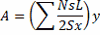

All of our previous analyses have been run using SWMM's dynamic wave flow routing option. It is also possible to analyze inlet performance using kinematic wave routing. However, kinematic wave routing is unable to create a backwater effect for excess water that remains on the street at a sag node after its inflow has passed through an inlet. Instead, since the junction node has no outlet conduits, it is treated as if it were an outfall node and any excess water is simply lost from the system (i.e., listed as external outflow in the flow balance appearing in the project's Status Report). This will produce a much different result for the sag point than that obtained using dynamic wave analysis. You can verify this by running the original example project under kinematic wave and comparing its Street Summary report with the one found using dynamic wave analysis.
This issue can be resolved by replacing sag junction nodes with storage nodes whose maximum depth equals the street's curb height and whose surface area equals the spread (i.e., top width) at a given height times half the length of all of the streets converging on the node. The latter can be expressed with the equation:

where the summation is made over all streets that converge on the node in question with A = storage surface area, Ns = 1 for a one-sided street or 2 for a two-sided street, L = street length, Sx = street cross slope and y = storage depth.
To apply this modification to our original example project:
| 1. | Right-click on node 4 and select Convert To | Storage Unit from the pop-up menu that appears |
| 2. | Bring up the storage unit's Property Editor and set its Max. Depth to 0.5 |
| 3. | Select the Storage Shape property and click the ellipsis button (or hit Enter) |
| 4. | In the Storage Shape Editor that appears select the Functional shape option and set a0 = 0, a1 = 20000 and a2 = 1. (The value of 20000 is derived from having two converging streets, both two-sided with a length of 200 and a cross slope of 0.02). |
| 5. | Run the analysis under kinematic wave. |
The resulting Street Summary report, shown below, looks very similar to the one found under dynamic wave.